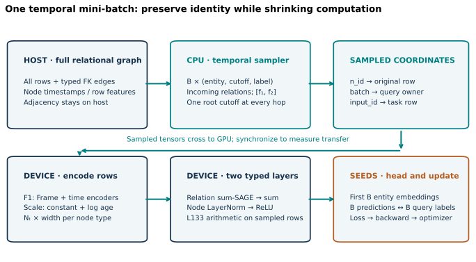
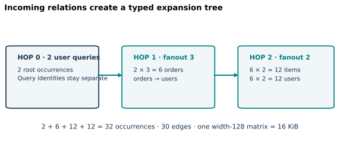
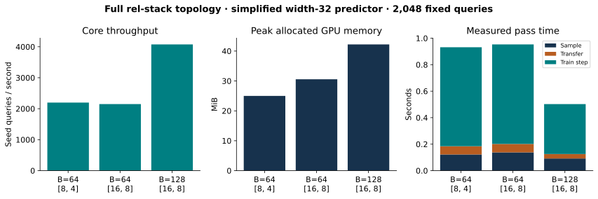
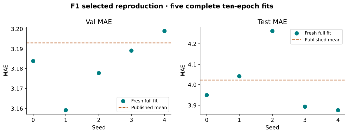

Year4 · Quarter2 · Lesson134
Training at scale: budget a temporal mini-batch
A graph can have millions of rows while one training step touches thousands. The hard part is controlling which thousands—and measuring the cost without changing the question.
Your win: configure a temporal heterogeneous mini-batch, prove that its messages belong to the right prediction query, and defend a measured throughput/memory trade-off.
Route: 5 minutes of retrieval → 15 minutes tracing a batch → 20 minutes of live code → 10 minutes defending the measurements. The full reproduction is an author/reference experiment; executing it is optional and does not replace your answers.
Student notebook · Executed reference · Solution notebook · Quick reference · Reproduction commands
1 · The layer is defined. Its input still needs a budget.¶
In Lesson 133, you opened the relation-specific transforms and the sum across incoming relations. Applying that layer to the whole database at once is unnecessary for seed-query supervision. We can first select the context required by a small set of predictions, then run the same message-passing computation on the sampled coordinates. This is the bridge from correct layer arithmetic to the mission's practical question: can a relational model deliver evidence within our compute budget?
Retrieve before reading: What identifies a prediction besides its entity ID? Why can the same database row occur twice in a batch? Which rows receive the supervised loss?
Check your retrieval
A prediction is keyed by entity and cutoff. Two queries can refer to one entity at different times, requiring different neighborhoods; disjoint temporal sampling keeps their occurrences separate. The head's first B seed outputs receive the B query labels. Context rows provide messages but are not extra labelled examples.The primary reading is the RelBench v1 paper, §4 and Appendix B, followed by the pinned released loader configuration. This lesson preserves that release's inclusive node-time cutoff and uniform strategy. A stricter deployment rule is a different experiment.
2 · Trace one batch from query to optimizer¶

Diagram trace. Follow the CPU-to-GPU handoff. Match n_id, batch and input_id to their separate identities before tracing the seed-only loss. On a narrow screen, scroll the figure sideways.
The full graph's adjacency and stored row features live on the host. A seed row contributes an entity ID, query time, and label. NeighborLoader follows incoming typed edges, filters candidates using that query's cutoff, and samples up to the fanout for each relation at each hop. n_id maps sampled coordinates back to database rows. batch identifies the query owning each occurrence; it is not a table ID. input_id identifies the original task row, so labels remain correct even when seeds repeat or shuffle. PyG's temporal sampler automatically uses disjoint sampling. PyG 2.6.1 source
The sampled features move to the device. The model encodes those rows, adds relative-time information, applies two heterogeneous layers, and predicts only the first B rows of the entity table. Backpropagation traverses this sampled computation. Increasing fanout changes the model's information and its training trajectory; it is not merely a speed switch.
Trace: Query 0 is (user 7, day 5) and query 1 is (user 7, day 10). A post created on day 8 can occur only in the second context. Deduplicating user 7 across queries without preserving context ownership would mix two different prediction problems.
3 · Fanout multiplies along paths and across relations¶
For one relation and two hops, the no-collision expansion is B × (1 + f₁ + f₁f₂) node occurrences. A heterogeneous schema can expand through several incoming relations at every hop. You must follow the schema, not multiply a homogeneous formula by the total number of relations.
Consider orders → users, items → orders, and users → orders. Starting with B=2 user queries and fanouts [3,2], the typed frontiers contain 2 users, then 6 orders, then 12 items plus 12 users: 32 occurrences and at most 30 sampled edges. Actual counts can be smaller because of degree limits, time filtering and shared nodes within a query. Occurrences across different queries remain separate.

TODO 1: implement the schema-aware bound. The function below counts an incoming relation once for each receiving occurrence. It assumes finite nonnegative fanouts and directional neighbor expansion; -1 means all neighbors and has no finite fanout-only bound.
def frontier_bound(schema, seed_type, batch_size, fanouts):
"""Incoming relation expansion, with no collisions; counts occurrences, not unique IDs."""
if batch_size < 1 or int(batch_size)!=batch_size or any(f < 0 or int(f)!=f for f in fanouts):
raise ValueError('Positive batch and finite nonnegative integer fanouts required')
if len(set(schema))!=len(schema):
raise ValueError('Duplicate relation')
frontiers=[{seed_type:int(batch_size)}]
for fanout in fanouts:
following={}
for source,relation,destination in schema:
n=frontiers[-1].get(destination,0)*int(fanout)
if n:following[source]=following.get(source,0)+n
frontiers.append(following)
nodes=sum(sum(f.values()) for f in frontiers)
return dict(frontiers=frontiers,node_occurrences=nodes,edge_occurrences=nodes-int(batch_size))
A float32 hidden matrix costs 4 × N × width bytes. That is one tensor, not peak GPU memory. Layer activations, relation outputs, gradients, optimizer state, indices, allocator reservations and transient workspace also count. Host adjacency, sampler CSC conversion and text preprocessing have separate costs. A lower bound on one matrix is not an OOM guarantee.
4 · Sampling is an information contract¶
TODO 2: reject a dated node newer than its own root cutoff and any edge joining occurrences owned by different queries. Equality passes because the released experiment uses node_time ≤ query_time. A static table with no timestamp is marked explicitly; this does not establish historical availability.
def audit_queries(times, owners, cutoffs, edges):
"""Verify root ownership and inclusive source cutoff; missing static time is explicit None."""
cutoffs=np.asarray(cutoffs);n=0
for kind,group in owners.items():
group=np.asarray(group,dtype=np.int64)
if np.any(group<0) or np.any(group>=len(cutoffs)):
raise ValueError('Invalid query owner')
if times[kind] is not None:
stamp=np.asarray(times[kind])
if stamp.shape!=group.shape or np.any(stamp>cutoffs[group]):
raise ValueError('Future node or mismatched timestamp shape')
n+=len(group)
count=0
for source,destination,index in edges:
a,b=np.asarray(index,dtype=np.int64)
if np.any(a<0) or np.any(b<0) or np.any(a>=len(owners[source])) or np.any(b>=len(owners[destination])):
raise ValueError('Edge coordinate outside sampled table')
if np.any(np.asarray(owners[source])[a]!=np.asarray(owners[destination])[b]):
raise ValueError('Cross-query message')
count+=len(a)
return dict(nodes=n,edges=count)
Our author runs also compare sampled node times and edges to their original global identities. A batch can satisfy time ≤ cutoff while holding the wrong timestamp or foreign-key edge. These checks complement the learner's ownership check rather than replace it. The same learner function runs against the real F1 and scale batches.
Units are part of the contract. The archive and task timestamps were probed and both use nanoseconds. The operator nevertheless explicitly converts both to datetime64[s] before taking integer counts; it does not assume all future archives use the same raw integer unit. A four-unit regression checks seconds, milliseconds, microseconds and nanoseconds.
Predict: if a day-8 post belongs to query 1, should an edge from that occurrence to query 0's user pass? It must fail even though day 8 is earlier than query 1's cutoff. Both endpoints of a message must belong to one prediction context. This extends Lesson 123's temporal graph contract into the sampled coordinates used by training.
5 · Measure the pipeline you actually run¶
GPU operations are asynchronous. Wall-clock timing around a forward call without synchronization can measure enqueue time. The scale operator synchronizes before and after device transfer and the combined forward/backward/optimizer step. It reports loader construction, warmups and audit time separately. It uses one loader worker, no prefetch workers, and a fixed order; this is a reproducible baseline, not a claim of maximal throughput. PyTorch CUDA semantics
TODO 3: aggregate throughput as total seed queries divided by total measured seconds. Do not average per-batch rates: small final batches and unequal durations make that biased. Return both a core rate (sample + transfer + step) and an audit-inclusive rate. Peak allocated memory measures live tensor allocations; peak reserved memory includes the CUDA caching allocator's pool. Neither is total process GPU usage.
def profile_summary(records):
"""Ratio of totals, with audit overhead reported separately; callers exclude warmups."""
if not records:raise ValueError('No measured batches')
timing={k:sum(float(r[k]) for r in records) for k in ['sample_s','transfer_s','step_s','audit_s']}
if any(not math.isfinite(v) or v<0 for v in timing.values()):raise ValueError('Invalid timing')
seconds=sum(timing[k] for k in ['sample_s','transfer_s','step_s'])
if seconds<=0:raise ValueError('Zero duration')
queries=sum(int(r['queries']) for r in records)
return dict(batches=len(records),queries=queries,**timing,queries_per_second=queries/seconds,
audited_queries_per_second=queries/(seconds+timing['audit_s']),
peak_allocated_bytes=max(r['peak_allocated_bytes'] for r in records),
peak_reserved_bytes=max(r['peak_reserved_bytes'] for r in records))
Predict: if sampling takes 0.8 seconds and device work takes 0.2 seconds, making device work twice as fast changes a one-second batch to 0.9 seconds—only about an 11% throughput gain. First measure which stage dominates.
6 · Two experiments, two claims¶
The F1 lane freshly executes five complete ten-epoch fits of RelBench v1 Table 7, rel-f1/driver-position, using the full released data and pinned model/trainer. It independently rescores every final prediction and checks selected outputs against the original model. The paper target is validation MAE 3.193 and test MAE 4.022; the predeclared descriptive tolerance is 0.2 on each mean. The full experiment's implementation is visible in the notebook appendix, including row encoders, graph construction, trainer and selection.
The scale lane retains all rel-stack rows through the released test cap and all resolvable foreign-key edges, with real user-engagement labels reconstructed by the original SQL on that same pinned archive. It deliberately replaces rich row encoders with constant-plus-log-age features and a width-32 two-layer heterogeneous predictor. It runs BCE training on the same label-blind set of 2,048 eligible task rows (one released training cutoff, roots created by that cutoff, ascending entity ID) under three fixed batch/fanout configurations. Two warmup batches perform updates before each measured pass. These are bounded training workloads, not complete epochs over the task or a reproduced benchmark score. Fixed initialization does not make different minibatch partitions equivalent optimization trajectories.
F1 full selected released-protocol reproduction: COMPLETE.
| Split | MAE mean ± sample seed SD | Published mean | Verdict |
|---|---|---|---|
| val | 3.181779 ± 0.014839 | 3.193 | CLOSE |
| test | 4.003968 ± 0.157440 | 4.022 | CLOSE |
All 6,295 final predictions independently rescored; 403,895 query occurrences audited across training and evaluation. Original-model replay maximum difference: 2.86e-06. F1 evidence.
Scale workload: COMPLETE. Full graph: 4,247,264 nodes, 11,625,774 directed edges. Each measured configuration covers the same 2,048 queries after two warmup update batches.
| Batch / fanouts | Mean sampled nodes | Core queries/s | With audit queries/s | Peak allocated MiB | Peak reserved MiB |
|---|---|---|---|---|---|
| 64 / [8, 4] | 3066.5 | 2198.2 | 1956.7 | 25.0 | 30.0 |
| 64 / [16, 8] | 4913.3 | 2148.9 | 1891.3 | 30.6 | 36.0 |
| 128 / [16, 8] | 9687.3 | 4076.4 | 3479.6 | 42.2 | 48.0 |
Preprocessing: 17.01 s. Peak process host RSS: 5639.8 MiB, distinct from GPU memory. Measured on Tesla T4. Loader construction and warmups are retained in the raw evidence.
Raw scale measurements. The official database endpoint served bytes differing from the historical registry: the first attempt stopped before training, and the recovery pins the obtained SHA256. This scale lane uses that pinned official archive; historical database identity is NOT_ESTABLISHED. F1 archives match their expected hashes.
Portable full-training path: PASS. All 22 notebook code cells ran in a separate pinned GPU Python namespace, including five fresh complete F1 fits and another 6,295 independently checked predictions. These are validation runs, not replacements for the primary five-seed result. Live Colab frontend remains NOT_CHECKED. GPU code-path evidence.


Interpret before looking at throughput: the graph census describes database scale; sampled occurrence counts describe per-step computation. The prefix, small features, warmup updates, single measurement pass and configuration order limit generalization to other queries and full models. We report descriptive timings, not confidence intervals or a winning hyperparameter. No timing-to-accuracy claim follows.
7 · Make scale fit a scientific budget¶
Our total cap is USD10 including seeds, retries and validation. We reserved USD2 for F1/validation, USD5 for the scale lane and USD3 for overhead/recovery. At the checked base prices, T4 + two CPU cores + 32 GiB is approximately USD0.940464/hour. The runner reserves maximum worker time before dispatch and disables automatic retries. A pilot informs whether to dispatch the full F1 set. Current price source
A stopped or shortened run retains its actual status. It cannot be turned into a full reproduction by extrapolating its speed or quoting another lesson's scores. The release's statistics use the database through the test cap, historical seeds/runtime are unavailable, and ingestion histories are missing. We preserve those facts in the protocol ledger. Whole-paper parity and historical identity remain NOT_ESTABLISHED.
EXIT · Defend a batch, not just a score¶
- For B=4 and fanouts [2,3] on the widget's schema, derive every typed frontier and the one-matrix float32 storage at width 128. Explain why it is not peak memory.
- Draw the duplicated user-7 contexts at days 5 and 10. Mark a cross-query edge that the audit must reject, and name one real-world leakage risk the timestamp check cannot resolve.
- From the measured table, choose a configuration for a stated memory ceiling and explain the dominant time component. Distinguish the measurements from a claim about accuracy or whole-task runtime.
- State precisely what was fully reproduced, what was a bounded training workload, and what remains unknown. Submit your three passing functions, arithmetic and written defense.
Return after 1, 7 and 30 days: reconstruct the relation frontier without notes, diagnose a mixed-query edge, and explain why averaging batch rates fails. Lesson 135 will turn these measured costs into a fair tuning budget.
Ask the agent follow-up questions about any step. Prepared lessons and author-run checks leave your mastery PENDING_WRITTEN_DEFENSE.
Carry this forward. Use the measured costs to reserve and enforce a fair tuning budget in Lesson 135. Continue to Lesson 135.